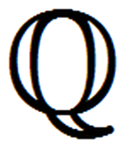
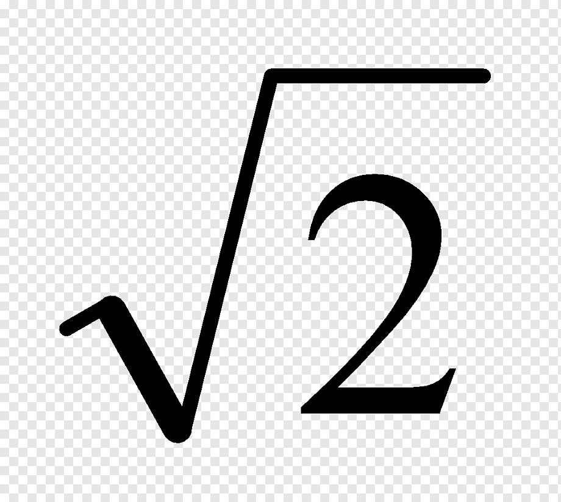
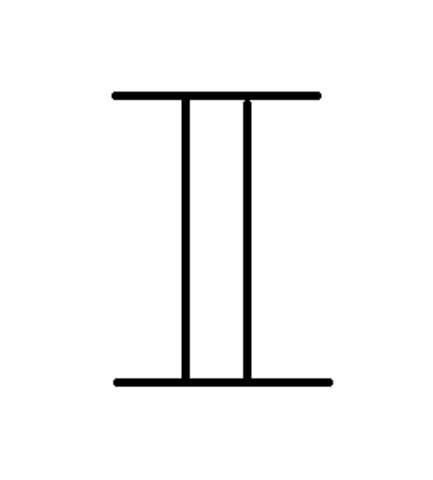

Naturales
Los números naturales son 0, 1, 2, 3,4, 5, 6, 7, 8, 9, 10, 11, ...
El conjunto de los números naturales se nota con el símbolo
que es una n mayúscula con el trazo diagonal doble.
Los números naturales son los primeros que utilizó el ser humano, y sirven para contar y para ordenar.
¿El 0 es un número natural?
Pues sobre esto no hay acuerdo.
Si usamos los números naturales para contar, es evidente que 0 debe ser un número natural.
Pero si usamos los números naturales para ordenar no tiene mucho sentido usar el 0,
pues para referirnos al primero empleamos el 1.
Enteros
Los números enteros son el cero, los demás naturales con un signo + delante y con un signo - menos delante.
Los números que llevan un + delante se llaman positivos y normalmente no se pone el signo +.
Los números que llevan un - delante se llaman negativos.
El conjunto de los números enteros se nota con el símbolo
que es una z mayúscula con el trazo diagonal doble.
Los enteros son {...,-5, -4, -3, -2, -1, 0, 1, 2, 3, 4, 5, ...}
Todos los números naturales son números enteros.
Los números enteros se utilizan para expresar magnitudes que toman valores mayores y menores que la cantidad de referencia que es el cero.
Por ejemplo, se usan los números enteros para expresar la temperatura,
se usan los valores positivos para las temperaturas mayores que 0º y las negativas para las temperaturas menores.
Los números enteros sirven para resolver uno de los problemas que presentan los números naturales,
y es que dos números enteros se pueden restar siempre. En los naturales sólo se puede restar un número más pequeño.
Racionales
Los números racionales son los que se pueden escribir en forma de fracción. Por ejemplo: ½, ¾.
El conjunto de los números racionales se nota con el símbolo 
que es una q mayúscula con trazos dobles, o con una línea inclinada.
Todos los números enteros son números racionales,
pues basta con escribirlos mediante una fracción de denominador 1.
Los números racionales sirven para resolver uno de los problemas que tienen los números enteros,
y es que dos números racionales se pueden dividir siempre.
Todos los números racionales se pueden expresar como números decimales.
Irracionales
Los números irracionales son los números que no se pueden escribir en forma de fracción.
Por ejemplo: π, 
Los números irracionales se pueden expresar como números decimales que tienen infinitas cifras decimales que no siguen ningún orden.
El conjunto de los números irracionales se nota con el símbolo 
Por ejemplo, el valor de con las primeras 30 cifras decimales es: 1.414213562373095048801688724209
Reales
El conjunto de los números reales es el que forma la unión de los números racionales y los números irracionales.
El conjunto de los números reales se nota con el símbolo que es una r mayúscula con los trazos dobles o solo el trazo vertical doble.
Los números reales se identifican con los puntos de una línea recta.
Todos los demás conjuntos numéricos están contenidos en los números reales.
Todos los números reales se pueden expresar como números decimales.